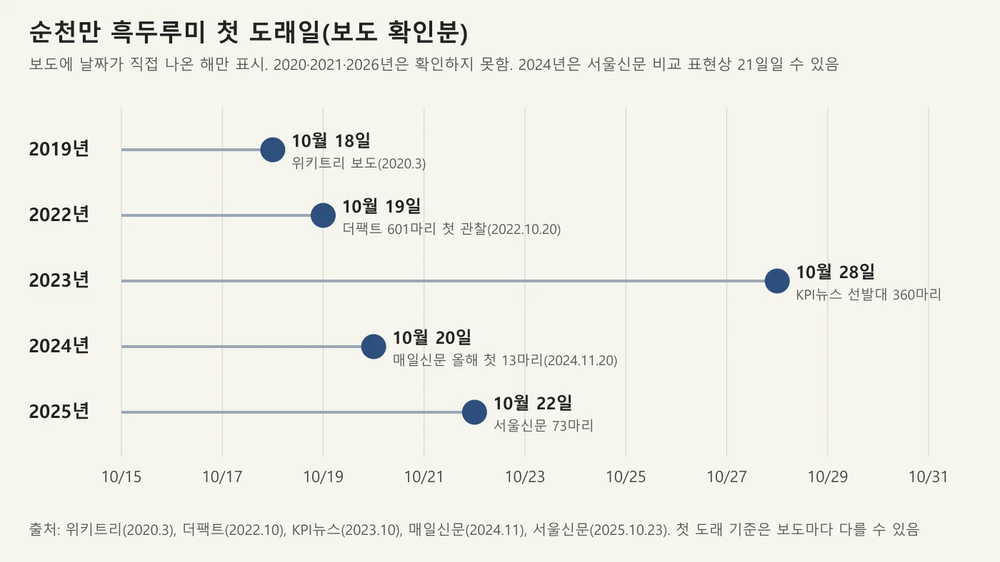
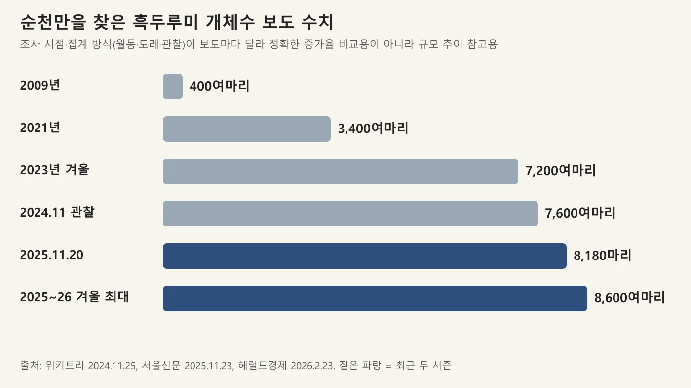
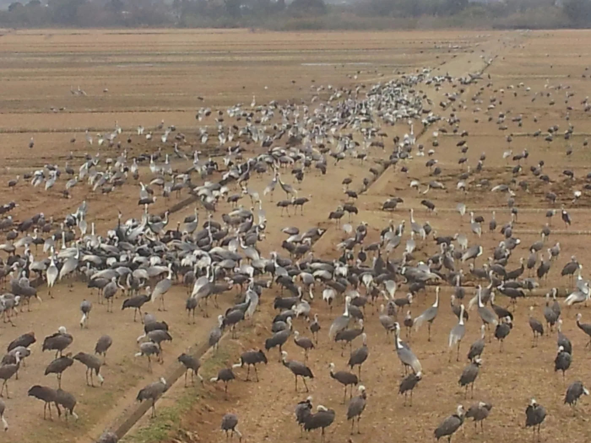
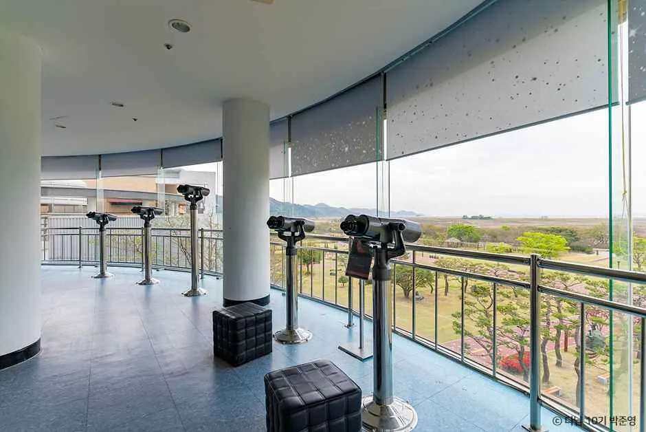
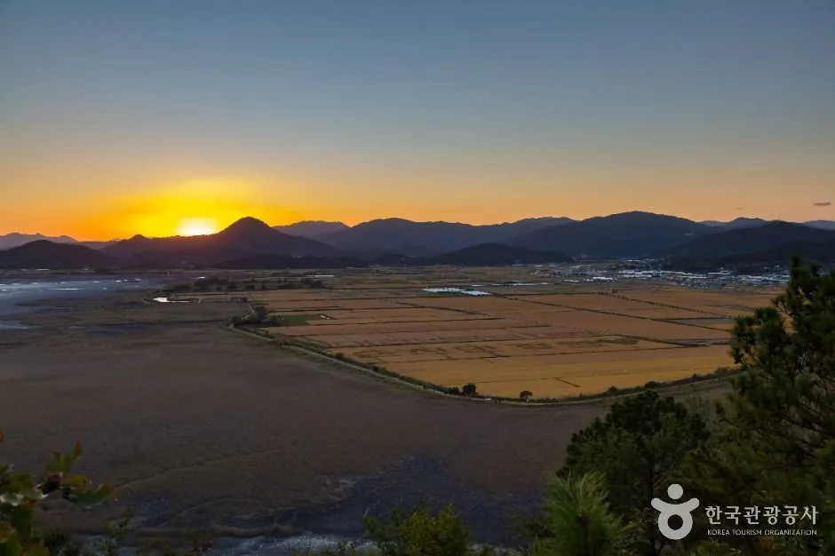
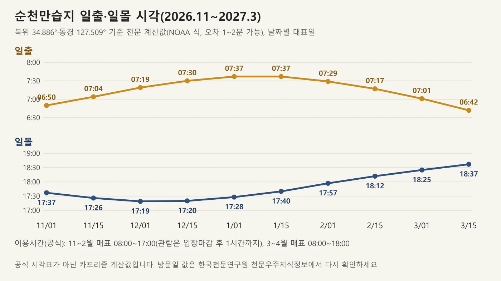
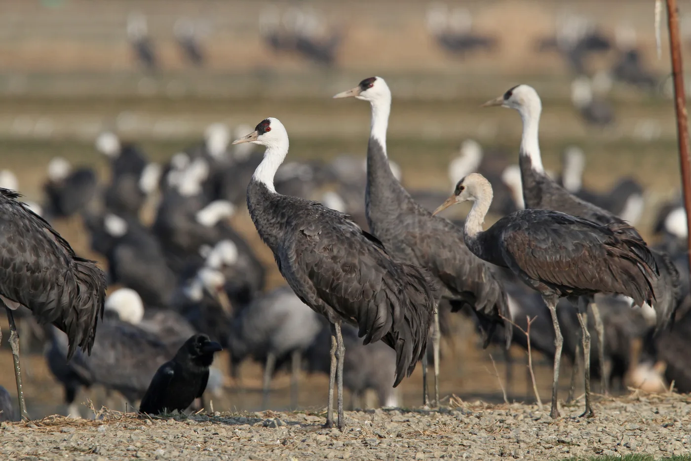
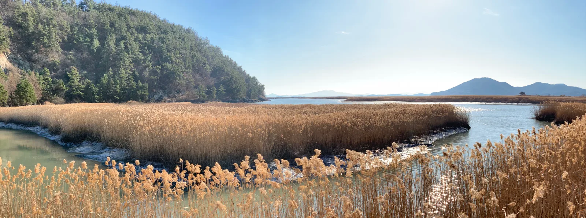
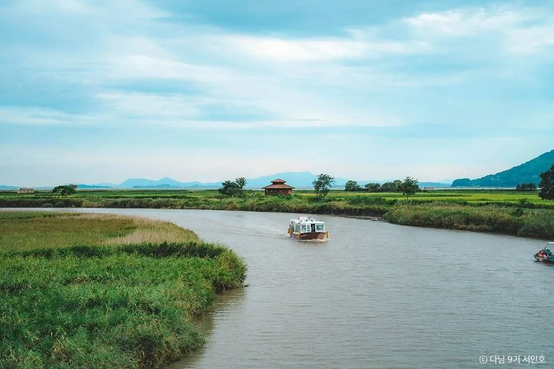

▲ 순천만 겨울 풍경. 위키미디어 파일 정보상 2016년 1월 촬영이며 해가 뜨는 장면인지 지는 장면인지는 확인하지 못했다. 이 사진에는 흑두루미가 보이지 않는다. 사진=문화재청(공공누리 제1유형, 위키미디어 커먼즈)
"올해 순천만 흑두루미는 언제 올까?" 2026년 10월 14일 기준 순천시나 순천만습지가 올가을 첫 도래를 알린 자료는 찾지 못했다. 그래서 이 글은 과거 보도로 확인되는 평년 흐름을 기준으로 시기를 가늠한다. 보도로 확인되는 최근 첫 도래일은 2025년 10월 22일 오후 3시, 73마리였고, 2025~26년 겨울에는 순천시 발표로 최대 8,600여 마리가 머물렀다. 순천만습지의 운영 정보(이용시간·요금·유의사항)와 흑두루미 보호지역 출입통제 공지, 한국관광공사 TourAPI를 2026년 10월 14일에 직접 열어 확인했다. 기존 순천만 기사가 용산전망대 일몰과 표 한 장 동선을 다뤘다면, 이 글은 흑두루미를 보려는 사람의 시기·위치·시간대·에티켓에 집중한다.
💡 먼저 결론
흑두루미는 순천시 안내를 인용한 보도 기준으로 10월 중순부터 이듬해 3월까지 순천만에서 겨울을 난다. 보도로 확인되는 첫 도래일은 10월 18~28일 사이이고 개체수는 11월 이후 불어난다. 습지는 11~2월 매표 08:00~17:00이고 일몰이 17시 20분 안팎이라 해 질 무렵 관람 시간이 짧다. 10월 말부터 이듬해 4월까지 흑두루미 보호지역은 출입이 통제된다는 공지가 있으므로 정해진 탐방로 밖으로 나가면 안 된다. 올가을 도래 소식, 2026~27 겨울 탐조 프로그램 일정, 보호지역 통제 지도 범위는 확인하지 못했다. 순천만습지 공지사항 바로가기
1. 한눈에 보기 — 확인한 것과 확인하지 못한 것
순천만 흑두루미 이야기는 해마다 비슷한 숫자가 돌아다닌다. 아래 표는 이번에 열어 본 공식 자료와 언론 보도를 항목별로 나누고, 확인하지 못한 항목을 따로 표시했다.
| 항목 | 확인된 값 | 출처·상태 |
|---|---|---|
| 도래·월동 시기 | 10월 중순~이듬해 3월(순천시 안내를 인용한 보도) | 서울신문 등 보도. 평년 기준 |
| 지난해 첫 도래 | 2025년 10월 22일 오후 3시, 73마리(작년보다 하루 늦음) | 서울신문 2025-10-23 |
| 올가을(2026) 도래 | 보도·공지를 찾지 못했다 | 순천만습지 공지·언론 검색(10월 14일) |
| 겨울 최대 개체수 | 2025~26 겨울 최대 8,600여 마리 | 헤럴드경제 2026-02-23(순천시 발표) |
| 습지 운영 | 11~2월 매표 08:00~17:00, 휴관 매월 마지막 주 월요일 | 순천만습지 누리집·TourAPI(수정 2026-09-03) |
| 입장료 | 성인 10,000원·청소년/군인 7,000원·어린이 5,000원 | 순천만습지 누리집, TourAPI와 일치 |
| 주차 | 소형 3,000원·대형 5,000원·이륜차 500원 | TourAPI(순천만습지) |
| 보호지역 출입통제 | 10월 말~이듬해 4월 지도상 표시 구역 출입통제(자전거·탐방객·차량) | 순천만습지 공지(2017-11-13 게시). 올해 별도 공지·지도 범위는 확인 못함 |
| 올해 운영 중단 공지 | 누리집 공지에서 습지 휴장 공지를 찾지 못함(최근 공지 2026-09-17 추석 프로그램) | 개방 보장은 아님, 전화 061-749-3114 |
| 2026~27 겨울 탐조 프로그램 | 확인하지 못했다 | 지난 시즌 운영 방식만 확인(7장) |
순천만습지 누리집은 최근 공지 목록이 2026년 9월 17일자 추석 체험 프로그램까지 올라 있어 사이트가 갱신 중임은 확인된다. 다만 흑두루미 보호지역 안내는 2017년에 올린 글이 지금도 그대로 남아 있는 상태라, 올해 구역 변경이 있는지는 공지만으로는 알 수 없다.
2. 언제 올까 — 보도로 확인되는 첫 도래일과 개체수
흑두루미는 러시아 번식지와 한반도·일본 월동지를 오가는 철새로, 순천만은 일본 이즈미와 함께 대표적인 월동지다. 순천만습지 누리집은 순천만이 "국제보호조인 흑두루미, 검은머리갈매기가 세계 전개체의 약 1%이상"이 서식하는 곳이라고 소개한다(이 설명 페이지의 수치는 오래된 것으로 보이며 최신 보도 수치와 차이가 크다). 첫 도래일은 매년 다르다.

▲ 순천만 흑두루미 첫 도래일(보도에 날짜가 직접 나온 해만 표시). 2024년은 매일신문 기준 10월 20일이며 서울신문 비교 표현으로는 21일이 된다. 사진=카프리즘 제작 도표
| 해 | 첫 도래 | 근거 | 비고 |
|---|---|---|---|
| 2019 | 10월 18일 | 위키트리 2020-03-25(2019년 10월 18일 첫 도래) | 직접 확인 |
| 2022 | 10월 19일 오후(601마리) | 더팩트 2022-10-20: 순천시가 19일 오후 601마리를 첫 관찰했다고 발표 | 직접 확인. KPI뉴스의 "지난해 대비 9일 늦어"와도 맞음 |
| 2023 | 10월 28일(선발대 360마리) | KPI뉴스 2023-10-29 | 직접 확인 |
| 2024 | 10월 20일(올해 첫 13마리) | 매일신문 2024-11-20: "지난달 20일" 올해 첫 흑두루미 13마리 관측 | 직접 확인. 서울신문은 2025년을 "작년보다 하루 늦은" 22일이라 써 21일로 읽히는 기준 차이가 있다 |
| 2025 | 10월 22일 오후 3시(73마리) | 서울신문 2025-10-23 | 직접 확인 |
| 2026 | 확인하지 못했다 | 순천시·누리집·언론 검색(10월 14일) | 오늘 이후 도착 가능 |
서울신문(2025-10-23)은 "작년보다 하루 늦은 지난 22일 오후 3시에 세계적 월동지 순천만을 다시 찾아 여유를 즐기고 있다"고 전했다. 2019~2025년 보도로 확인되는 첫 도래일이 10월 18일~28일 사이에 있다는 점이 평년 윤곽이다. 첫 무리는 수십~수백 마리에 그치고 본격적으로 불어나는 시기는 11월 이후다. 서울신문 2025-11-23은 11월 20일 기준 도래 개체수가 8,180마리로 역대 최대치였다고 전했고, 위키트리 2024-11-25는 기사 작성 시점에 흑두루미 6,200여 마리를 현장에서 관찰했다고 적었고, 같은 기사는 그해 11월 관찰 개체를 7,600여 마리로도 소개했다(집계 기준이 달라 두 수치가 다르다).

▲ 순천만을 찾은 흑두루미 개체수 보도 수치. 집계 시점과 기준이 보도마다 달라 규모 추이 참고용이다. 사진=카프리즘 제작 도표
북상 시기도 참고가 된다. 세계타임즈 2026-03-19는 올해 순천만에 약 8,600마리가 도래했고 당시 약 1,800마리가 머무는 중이며 3월 하순 번식지로 이동할 것으로 내다봤다. 순천시는 이 시기에 3월 21~29일 주말 '흑두루미 배웅 프로그램'(배웅 탐조·볍씨 나누기)을 운영했다. 겨울철 개체수는 시즌 중에도 오르내린다. 순천만습지 누리집 '흑두루미 모니터링' 게시판에는 2024-12-02 5,818, 2025-01-15 5,419, 2025-02-18 4,136, 2025-03-26 421이라는 '순천만 겨울철새 현황' 개체수가 올라 있다(게시판은 대상 종을 따로 표기하지 않고, 2025년 3월 이후 새 글은 찾지 못했다).

▲ 일본 가고시마현 이즈미 두루미 도래지의 두루미 무리. 순천만이 아닌 일본 월동지 사진이며 종 구성은 확인하지 못했다(위키미디어 파일 정보상 2012년 촬영). 사진=dai6512(위키미디어 커먼즈, CC BY-SA 2.0)
순천만 흑두루미 중 상당수는 일본 이즈미와 오가며 겨울을 난다. 위키트리 2020-03-25는 순천시 자료로 일본 이즈미 개체 약 5,000마리가 순천만을 중간 기착지로 이용한다고 전했고, 더팩트 2022-11-24는 올해 도래한 흑두루미가 1만여 마리라고 전하며 이즈미 개체가 11월 초부터 순천만으로 이동했다고 설명했다. 순천시는 이즈미시와 조류인플루엔자 발생 정보를 수시로 공유한다고 알려져 있다.
3. 어디서 볼까 — 공식 확인된 관찰 지점
흑두루미는 사람을 많이 경계해 아무 데서나 가까이 볼 수 없다. 위키트리 2024-11-25는 람사르길에서 허용하는 접근 거리가 150m였는데 그해에는 탐조대 인근 농경지 80m까지 흑두루미가 접근했다고 전했다. 공식 누리집·보도로 확인한 지점은 아래와 같다.
| 지점 | 확인한 내용 | 출처 |
|---|---|---|
| 순천만천문대 2층 | 고배율 쌍안경이 설치돼 있고, 천문대는 "낮에는 새를 보는 천문대"로 소개. 셀프 탐조 가능 | 순천만습지 누리집·위키트리 2024-11-25 |
| 순천만 탐조대(람사르길) | 고배율 쌍안경 셀프 탐조, 인근 농경지에서 흑두루미 접근 | 위키트리 2024-11-25 |
| 용산전망대 | 용산 입구에서 약 30분 도보. 공식 설명에 '흑두루미 도래지' 조망 언급. 2025-07-11 준공 | 순천만습지 용산전망대 페이지 |
| 갈대숲탐방로·람사르길·용산소공원 | 전문가와 함께하는 사운드·워킹 탐조 구간(2024~25 시즌) | 위키트리 2024-11-25 |
| 생태체험선 | S자 노선(왕복 30분) 성인 7,000원, 화포 노선(왕복 60분) 성인 12,000원, 월요일 휴무 | 순천만습지 누리집 |
| 와온해변 | 일몰 사진 명소로 분류. 상시 개방·연중무휴(TourAPI). 흑두루미 관찰 지점으로는 공식 확인하지 못함 | TourAPI |

▲ 순천만천문대 2층 전망 공간. 고배율 쌍안경이 줄지어 있다. 촬영 시기는 확인하지 못했다. 사진=한국관광공사
▲ 겨울철 순천만 전경. 위키미디어 파일 정보상 2018년 12월 31일 촬영했고 촬영 지점은 확인하지 못했다. 사진에 흑두루미는 보이지 않는다. 사진=Jjw(위키미디어 커먼즈, CC BY-SA 4.0)
흑두루미의 먹이터인 희망농업단지는 순천시가 서식지 안정을 위해 조성·관리하는 농경지로 보도됐다. 누구나 들어가 볼 수 있는 구역인지는 공식 확인하지 못했으므로 일반 관람객은 탐방로와 쌍안경 자리에서 보는 것으로 이해하는 편이 안전하다.

▲ 한국관광공사가 '순천_용산전망대' 사진으로 분류한 장면. 황금빛 논이 보여 수확기로 보이나 촬영 시기는 확인하지 못했다. 사진=한국관광공사
4. 몇 시에 갈까 — 일출·일몰과 운영시간
겨울철 습지는 해가 빨리 진다. 순천만습지 누리집 이용시간 안내는 11~2월 매표 08:00~17:00, 관람은 입장 마감 1시간 뒤까지이며, 가로등 불이 마감시간에 꺼지므로 일몰 30분까지는 남아 있는 하늘빛에 이동할 수 있지만 어두워진 뒤 이동은 사고 위험이 있으니 유의하라고 적었다. 유의사항에도 "탐방로 조명 시설이 없습니다"가 들어 있다. 12월 초 일몰이 17시 20분 안팎이므로 매표 마감 17시는 일몰 20분 전이다.

▲ 순천만습지 좌표 기준 일출·일몰 시각(카프리즘 천문 계산값). 사진=카프리즘 제작 도표
| 날짜 | 일출 | 일몰 | 공식 매표 시간 |
|---|---|---|---|
| 2026-11-01 | 06:50 | 17:37 | 11~2월 08:00~17:00 |
| 2026-11-15 | 07:04 | 17:26 | 11~2월 08:00~17:00 |
| 2026-12-01 | 07:19 | 17:19 | 11~2월 08:00~17:00 |
| 2026-12-15 | 07:30 | 17:20 | 11~2월 08:00~17:00 |
| 2027-01-01 | 07:37 | 17:28 | 11~2월 08:00~17:00 |
| 2027-01-15 | 07:37 | 17:40 | 11~2월 08:00~17:00 |
| 2027-02-01 | 07:29 | 17:57 | 11~2월 08:00~17:00 |
| 2027-02-15 | 07:17 | 18:12 | 11~2월 08:00~17:00 |
| 2027-03-01 | 07:01 | 18:25 | 3~4월 08:00~18:00 |
| 2027-03-15 | 06:42 | 18:37 | 3~4월 08:00~18:00 |
위 일출·일몰은 순천만습지 좌표를 NOAA 천문 식에 넣어 카프리즘이 계산한 값이며 오차가 1~2분 있을 수 있다. 한국천문연구원 공식 시각표가 아니므로 방문일 값은 천문우주지식정보에서 다시 확인하자. 흑두루미가 새벽에 먹이터로 나가고 저녁에 잠자리로 돌아오는 정확한 시각대는 공식 자료에서 확인하지 못했다. 다만 지난 시즌 탐조 프로그램이 개장 전 07시와 10·13·16시로 짜인 점은 하루 중 여러 시간대에 탐조가 이뤄진다는 참고가 된다. 시간 계획은 아래처럼 잡아 볼 수 있다(카프리즘 제안).
| 시각 | 할 일 | 근거·비고 |
|---|---|---|
| 14:30 전후 | 입장 후 천문대 2층 쌍안경으로 농경지·갯벌 탐색 | 매표 마감 17:00 전에 입장 |
| 15:00 | 용산 입구에서 용산전망대로 도보 이동 | 공식 소요 약 30분 |
| 15:30~일몰 | 용산전망대에서 갈대·S자 수로·일몰 관찰 | 12월 초 일몰 17:19(계산값) |
| 일몰 후 30분 이내 | 조명 없는 탐방로 복귀 완료 | 공식: 일몰 30분까지 하늘빛으로 이동 가능 |
▲ 한국관광공사가 '순천_용산전망대' 사진으로 분류한 S자 수로 일몰 장면. 촬영 시기는 확인하지 못했다. 사진=한국관광공사
5. 출입 제한과 탐조 에티켓
흑두루미는 천연기념물 제228호다. 순천만습지 공지(2017-11-13 게시)는 매월 10월 말부터 이듬해 4월까지 지도상 표시된 지역의 출입을 통제하며 자전거·탐방객·차량 모두 제한한다고 안내한다. 이 공지의 지도는 이미지 첨부로만 올라와 있어 구체적인 범위는 이 글에서 확인하지 못했다. 습지 안 유의사항은 누리집에 다음과 같이 올라 있다.
| 항목 | 내용 |
|---|---|
| 탐방로 | 지정된 길만 관람(추락·뱀·벌 위험) |
| 식물·생물 | 채집 금지 |
| 음식물·흡연·음주 | 반입·행위 금지 |
| 자전거·탈것 | 자전거와 전동 이동 장비·각종 탈것 출입 불가 |
| 반려동물 | 데리고 올 수 없음 |
| 드론 | 철새 보금자리를 위해 헬리캠(드론) 등 비행조종기 반입 금지. 순천만 일대 10㎢는 비행회피공역(2012-09-20 지정, 2015년 공지 기준) |
| 유모차·휠체어 | 20개월 미만 유모차, 휠체어 매표소 앞 대여 |
| 조명 | 탐방로 조명 시설 없음 |
이 항목 외 에티켓은 일반 탐조 상식이다(카프리즘 정리, 공식 규정 아님). 흑두루미는 사람이 다가가면 무리 전체가 날아오를 수 있으므로 거리를 두고 소리를 낮추고, 눈에 띄지 않는 색 옷과 쌍안경·망원경을 쓰고 플래시는 끄자. 조류인플루엔자 발생 때 통제가 걸릴 수 있으나 순천만의 올겨울 통제 공지는 찾지 못했다. 사진 촬영은 정해진 탐방로와 쌍안경 자리에서만 하자.

▲ 흑두루미 무리. 일본 가고시마현 이즈미 두루미 도래지에서 2017년 2월 촬영(위키미디어 파일 정보). 순천만이 아닌 일본 월동지 사진이다. 사진=Christoph Moning(위키미디어 커먼즈, CC BY 4.0)
6. 입장료·주차·교통
순천만습지와 순천만국가정원은 7km 떨어져 있다. 누리집은 "입장권은 당일에 한하여 유효하며, 순천만국가정원 입장권으로 순천만습지까지 관람할 수 있습니다"라고 안내하고, 습지에서 산 표로 국가정원에 들어갈 때는 표를 제시해야 한다고 한다. 표 한 장 구조와 스카이큐브는 순천만습지·국가정원 표 한 장 가이드에 정리돼 있다.
| 구분 | 성인(19~64세) | 청소년·군인(13~18세) | 어린이(7~12세) |
|---|---|---|---|
| 개인 | 10,000원 | 7,000원 | 5,000원 |
| 단체(20인 이상) | 6,000원 | 5,000원 | 3,000원 |
| 순천시민 | 2,000원 | 1,500원 | 무료 |
| 순천시 관광지 통합입장권(개인) | 12,000원 | 8,500원 | 5,500원 |
| 항목 | 확인한 내용 | 출처 |
|---|---|---|
| 주차요금 | 이륜차 500원, 소형 3,000원, 대형 5,000원 | TourAPI. 누리집에 '주차요금안내' 탭 있음 |
| 시내버스 | 66번 종합버스터미널·순천역 → 순천만 06:05~22:00, 약 25분 간격 | 순천만습지 오시는길 |
| 승용차 | 순천역 8.6km 16분, 종합버스터미널 8.5km 15분, 여수공항 20.4km 23분 | 순천만습지 오시는길 |
| 시내버스 소요 | 순천역 약 35분, 종합버스터미널 약 40분, 여수공항 약 58분(환승 포함) | 순천만습지 오시는길 |
| 문의 | 061-749-3114 | TourAPI·누리집 |
국가정원 쪽은 TourAPI 기준 10~6월 09:00~20:00(입장 마감 19:00), 주차 무료, 매월 마지막 주 월요일 휴무다. 습지와 같은 날 방문한다면 흑두루미 시간대를 먼저 잡고 정원은 나머지 시간에 배치하는 편이 낫다. 매월 마지막 주 월요일 휴관은 2026년 11월 30일과 12월 28일이 해당하는 것으로 계산되나 공휴일 이동 여부는 확인하지 못했다.

▲ 순천만 겨울 갈대밭. 위키미디어 파일 정보상 2018년 12월 31일 촬영한 순천만 사진이며 흑두루미는 보이지 않는다. 사진=Jjw(위키미디어 커먼즈, CC BY-SA 4.0)
7. 겨울철새 탐조 프로그램과 생태체험선
위키트리 2024-11-25는 순천만이 2024년 12월 2일부터 2025년 3월 말까지 겨울철새 탐조 프로그램을 운영한다고 전했다. 이 값은 지난 시즌 자료이며 2026~27 겨울 일정은 확인하지 못했다. 신청은 순천만습지 누리집 예약 메뉴에서 받는다. 순천만습지 예약 메뉴 바로가기
| 구분 | 시간 | 예약 | 내용 |
|---|---|---|---|
| 셀프 탐조 | 시간 명시 없음 | 예약 언급 없음 | 천문대 2층·탐조대 고배율 쌍안경 |
| 사운드 탐조 | 매일 10·14·16시(1시간) | 사전 예약 | 전문가와 람사르길·갈대숲탐방로·용산소공원 일대 탐조 |
| 워킹 탐조 | 개장 전 07시, 10·13·16시(2시간) | 사전 예약 | 전문가와 람사르길 탐조 포인트 구간 도보 |
대상은 7세 이상, 회당 15명 선착순이었고 일부는 유료로 운영한다고만 알려졌으며 금액은 확인하지 못했다. 2026년 봄에는 '흑두루미의 날'(2월 28일) 기념으로 새벽 철새 모니터링·선상투어·1박2일 버딩 챌린지·갈대숲 별자리 관찰이 사전 예약 프로그램으로 소개됐다(헤럴드경제 2026-02-23).
선상 관찰은 생태체험선이 맡는다. S자 노선은 왕복 6km 30분, 성인 7,000원·청소년 3,000원·어린이 2,000원, 화포 노선은 왕복 12km 60분, 성인 12,000원·청소년 5,000원·어린이 3,000원이다. 사전 예약은 받지 않고 현장 매표만 되며, 승선 인원 4명 이상이어야 운항하고 월요일은 휴무다. 신분증 지참과 승선신고서 작성이 필요하다. 운항 시간표는 누리집에 달력 형태로 올라 있어 방문 전 확인해야 한다. 생태체험선 안내 바로가기

▲ 순천만 수로를 지나는 배. 초록 식생이 보이는 여름철 사진이며 촬영 시기는 확인하지 못했다. 사진=한국관광공사
8. 함께 가볼 곳과 기존 기사
와온해변은 TourAPI에서 상시 개방·연중무휴로 올라 있고 일몰 사진이 여러 장 올라와 있는 곳이다. 순천만습지 마감 시각과 별개이므로 이동 시간은 확인하지 못했고, 흑두루미 관찰 지점으로는 공식 확인하지 못했다.
▲ '순천_와온해변' 사진 중 일몰 장면. 촬영 시기는 확인하지 못했다. 사진=한국관광공사
| 주제 | 기사 | 다른 점 |
|---|---|---|
| 표 한 장·용산전망대 동선 | 순천만습지·국가정원 하루 코스 | 입장권 구조·스카이큐브·개장시간 중심 |
| 갈대축제 혼잡 | 순천만 갈대축제 절정기 혼잡 | 10월 말 축제 PRT·용산 혼잡 |
| 순천 민속마을 | 낙안읍성 가이드 | 시내 인근 연계 코스 |
| 다른 두루미류 월동지 | 창원 주남저수지 철새 가이드 | 재두루미 중심, 올해 통제 이력 확인 |
순천만 갈대축제 기간(10월 말~11월 초)은 흑두루미 첫 도래 시기와 겹칠 수 있다. 흑두루미가 목적이라면 축제 절정 시간대 혼잡은 위 갈대축제 기사를 참고해 피하는 편이 낫다.
9. 출발 전 체크리스트와 문의처
- 도래 확인: 올가을 첫 도래 소식은 확인하지 못했으므로 순천만습지 공지사항과 순천시 보도자료를 먼저 본다.
- 매표 마감: 11~2월 17:00. 일몰이 17:20 안팎이라 늦게 가면 일몰 시간을 놓친다.
- 휴관일: 매월 마지막 주 월요일, 생태체험선은 월요일.
- 복장·장비: 방한복, 쌍안경. 탐방로 조명이 없으니 어두워지기 전에 복귀.
- 드론·반려동물·자전거: 모두 가져가지 않는다.
- 보호지역: 10월 말~이듬해 4월 지도상 구역은 출입통제. 정해진 길만 걷는다.
- 문의: 순천만습지 061-749-3114, 순천만보전과 061-749-6072, 생태체험선 매표소 061-749-4059.
✅ 핵심 체크
· 평년 도래: 10월 중순~3월, 보도 확인 첫 도래 10월 18~28일 / 2025년 10월 22일 73마리
· 올가을 도래·출입통제 지도 범위·겨울 탐조 프로그램 일정: 확인하지 못함
· 습지 11~2월 매표 08~17시, 입장료 성인 10,000원, 주차 소형 3,000원
· 일몰 12월 초 17:19(계산값), 탐방로 조명 없음
10. 정리
순천만 흑두루미는 10월 중순부터 이듬해 3월까지 머물며, 보도로 확인되는 최근 첫 도래는 2025년 10월 22일 73마리였고 겨울 최대는 8,600여 마리다. 올가을 도래 소식은 2026년 10월 14일 기준으로 찾지 못했다.
습지는 11~2월 매표가 17시에 끝나고 탐방로 조명이 없으므로 일몰 전에 움직여야 한다. 10월 말부터 4월까지 보호지역 출입통제, 드론·반려동물·자전거 금지를 지키고, 올겨울 탐조 프로그램 일정은 누리집에서 확인하자.